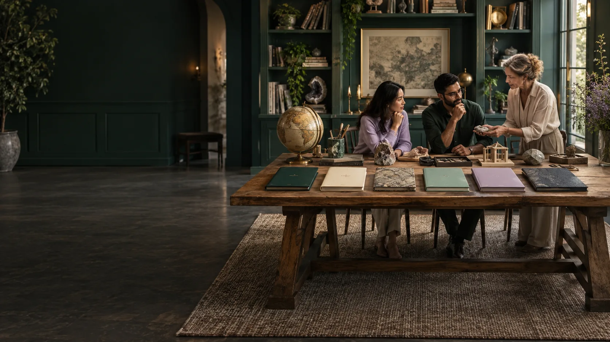

THE AURA TEACHER / COMPLETE COURSE NAVIGATOR
Sixty days. A widening world.
From a personal life map to civic space stewardship across Earth and the solar system. Sixty source-linked encounters develop capability through making, testing and teaching.
A progression with room for a person.
Each day develops an objective through a studio task, review, teach-back and a next step. The learner brings their own interests, resources and chosen responsibilities. The course is a learning design; it does not confer a professional or clinical qualification.
Six movements of ten days.
Personal meaning leads to reasoning, tools and world models. Shared intelligence leads to civic leadership, physical infrastructure, scientific inquiry and frontier stewardship. Each movement contains ten daily readings.
Evidence of learning.
A portfolio records what was actually made, tested, revised and taught. A learner explains a concept to another adult, observes their attempt in a different context and revises the teaching. Displayed completion marks are optional browser-local bookmarks, not certification.
Connected to Genesis. A separate calendar.
A teacher-development project may inform a Genesis reflection, but it retains its own actual duration and result. The sixty-day course and sixty pressure sessions are separate tracks in the source programme.
Personal meaning
Life maps, changing selves, symbols, embodiment, language, memory and the first teaching encounter.
02 / DAYS 11–20Learning & reasoning
Attention, retrieval, models, training examples, evidence, creative intelligence and transfer.
03 / DAYS 21–30Tools & worlds
Functions, callers, specialist teams, repair, world models, observers and scenarios.
04 / DAYS 31–40Shared intelligence
Permissioned encounters, plural values, partnership, culture, community twins and leadership.
05 / DAYS 41–50Science & systems
Compute, sovereignty, experiments, materials, longevity, ecology, resilience and habitats.
06 / DAYS 51–60Frontier stewardship
Solar-system missions, transfer, recursive improvement, collective intelligence and a reviewed public portfolio.
Bookmarks stay in this browser.